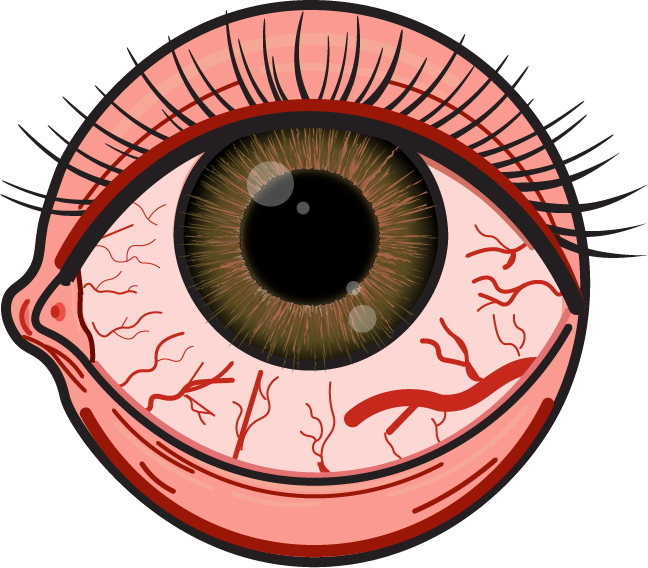

For this project, using Adobe Illustrator and a stencil, I recreated a bloodshot eye that represented the overwhelming stress and lack of sleep I get from pursuing higher ed. The veins and bags underneath emphasize the exhaustion, while the reddish tone in the whites of the eyes enhance the sense of fatigue. I also learned how to replicate an iris to add more realism, giving the piece a more lifelike quality. Altogether, the design captures the emotional weight of burnout along with a determination lying beneath the iris.